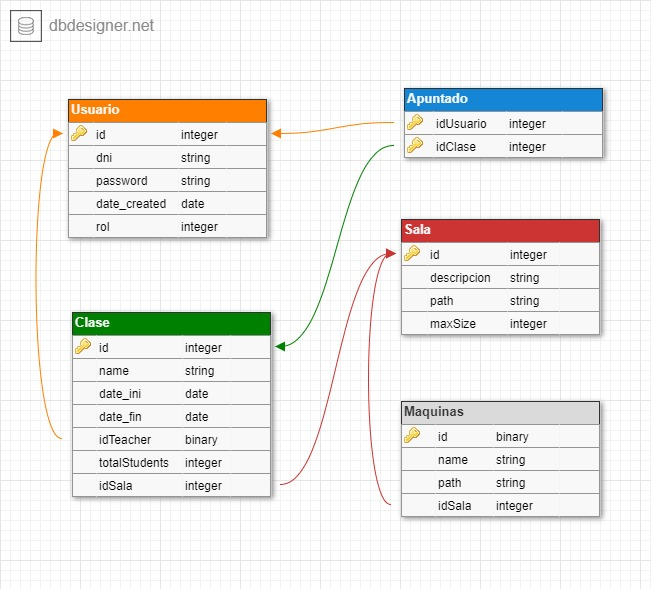

Léeme: Almagym
Objetivo
Una aplicación que gestione las clases y salas de un gimnasio, además de permitir la interactuación entre los clientes.
En cualquier momento, un profesor podrá reservar una sala para impartir una clase en ella,
dichas clases podrán ser modificadas en cualquier momento, una vez creadas las clases,
los clientes podrán apuntarse o desapuntarse de las clases en cualquier momento,
además de esto, los clientes también podrán intercambiar mensajes con otros usuarios a los cuales pueden
preguntar dudas sobre las clases, buscar consejos sobre rutinas, o simplemente tener una conversación
amistosa con sus compañeros. Esta aplicación permitirá en todo momento visualizar las salas
con todo el equipamiento que tenga cada una, visualizar las clases, y el perfil de cada usuario,
permitiendo además modificarlos, incluso subiendo imágenes.
Soporta los siguientes roles:
-
El administrador (usuario: a, clave: aa) puede crear, eliminar o modificar usuarios, salas, y clases, es decir,
tiene control total sobre la aplicación. Además puede acceder a toda la información disponible,
entre ella el perfil de los usuarios, las clases, y las salas.
-
El profesor (usuario: t, clave: aa) puede crear, eliminar o modificar clases, reservando así las aulas
disponibles, también puede visualizar información acerca de las salas y las clases.
-
El cliente (usuario: c, clave: aa) este es el usuario con menos privilegios, solo puede visualizar las salas y las clases,
así como apuntarse a las clases.
Base de datos

Vistas
- home - vista inicial.
Contiene una introducción sobre el gimnasio.
- horarios - vista del calendario.
Contiene un calendario con las clases que actualmente se imparten en el gimnasio.
- clase - vista de las clases.
Esta vista contiene información sobre todas las salas del gimnasio, puede verla cualquier usuario
pero solo puede ser modificada por el administrador.
- clases - vista de las clases.
Contiene todas las clases que se imparten en el gimnasio, puede ser modificada tanto por profesores
como por administradores, y los clientes pueden apuntarse a las clases.
- usuarios - vista de los usuarios.
Solo puede ser vista por el administrador, contiene un listado de todos los usuarios,
en ella puede administrar los usuarios del gimnasio.
- mensajes - vista de mensajería.
Contiene una lista de los usuarios, y permite el envió de mensajes entre ellos.
- perfil - vista del perfil de usuario.
Contiene información sobre el perfil del propio usuario,
permitiendo además la información del mismo.
- Cabecera - Vista de la cabecera de la web,
contiene accesos a todas las vistas anterior mente expuestas,
dependiendo del tipo de usuario estos enlaces pueden permaneces ocultos,
a la derecha de la misma es posible registrarse o loguearse.
Recursos
- Todas las imágenes incorporadas en esta web han sido encontradas en pinterest, por ejemplo:
todas las imágenes de dicha web tienen licencia
Creative Commons .
- Pagina oficial bootstrap
Usamos bootstrap para mejorar la interfaz de nuestra web, en este caso, en forma de botones, pero mas adelante su potencial nos llevara a usarlo para otras labores.
- Licencia Bootstrap